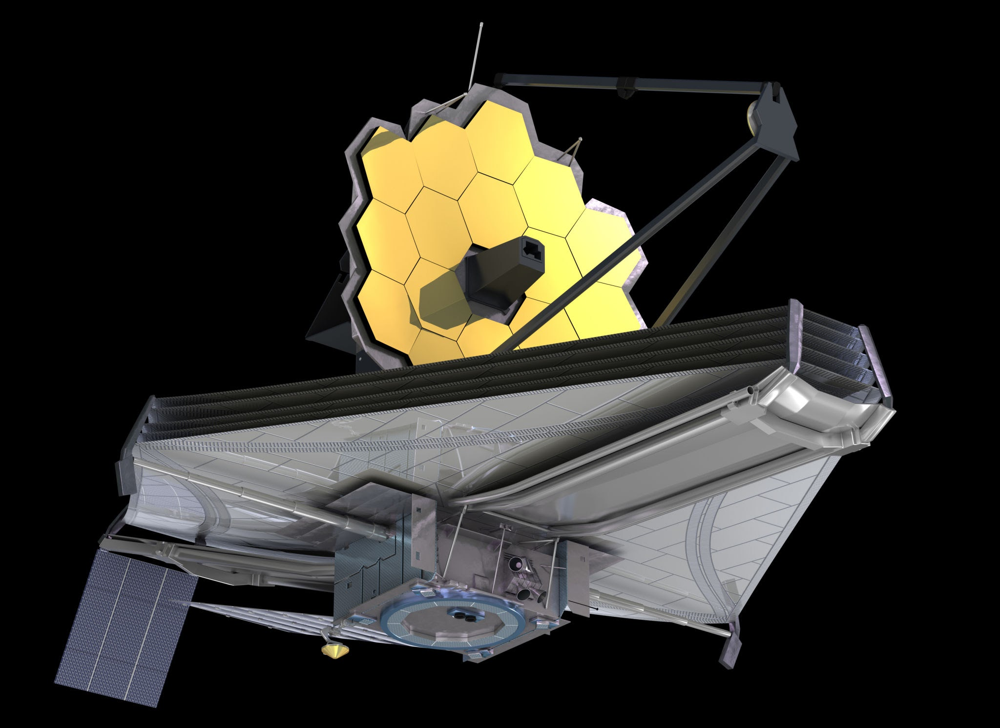
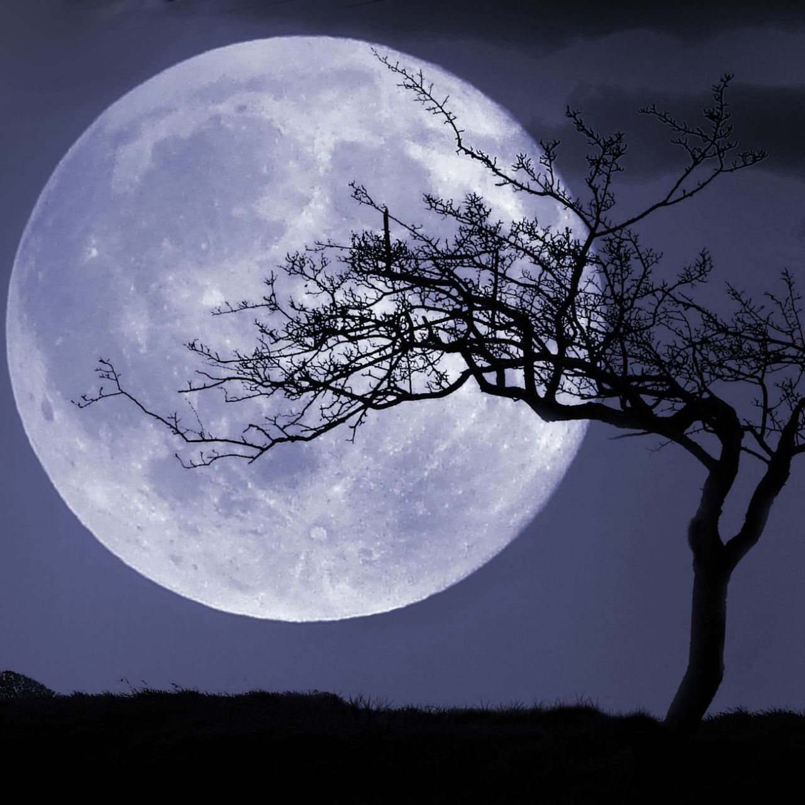

I Mars
Mars is the fourth planet and the furthest terrestrial planet from the Sun. The reddish color of its surface is due to finely grained iron(III) oxide dust in the soil, giving it the nickname "the Red Planet". Mars's radius is second smallest among the planets in the Solar System at 3,389.5 km
III earth
Earth is a terrestrial or inner planet consisting of a thin outer crust, an intermediate mantle, and a dense inner core.
IV Hubble

Edwin Powell Hubble was an American astronomer. He played a crucial role in establishing the fields of extragalactic astronomy and observational cosmology. Hubble proved that many objects previously thought to be clouds of dust and gas and classified as "nebulae" were actually galaxies beyond the Milky Way
V James Web
The James Webb Space Telescope is the largest space telescope, made to conduct infrared astronomy. Its high-resolution and high-sensitivity instruments allow it to view objects too old, distant, or faint for the Hubble Space Telescope.
VI Moon
A natural satellite is, in the most common usage, an astronomical body that orbits a planet, dwarf planet, or small Solar System body. Natural satellites are colloquially referred to as moons, a derivation from the Moon of Earth
VII Sun

The Sun is a 4.5 billion-year-old yellow dwarf star – a hot glowing ball of hydrogen and helium – at the center of our solar system. It's about 93 million miles (150 million kilometers) from Earth and it's our solar system's only star. Without the Sun's energy, life as we know it could not exist on our home planet.